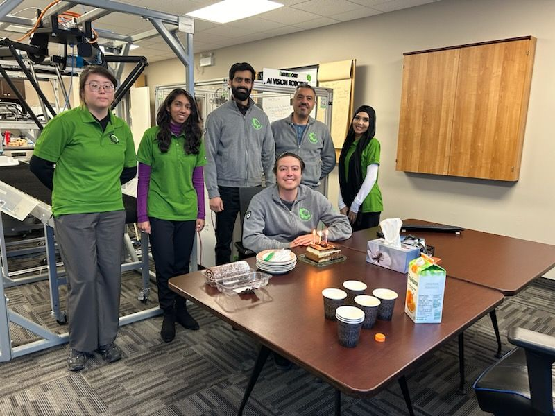
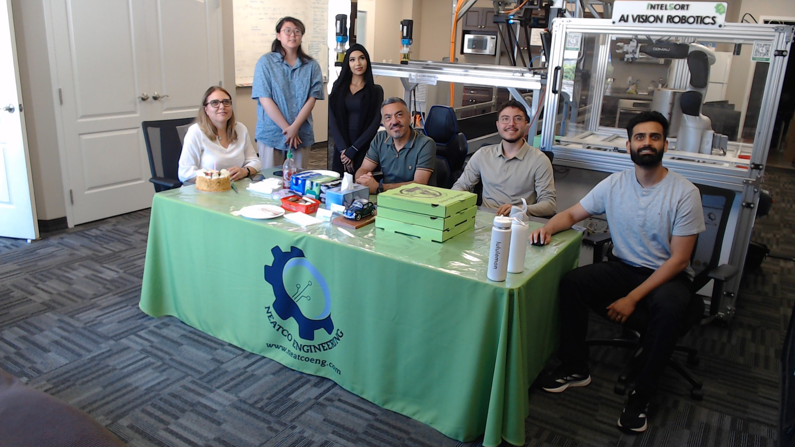

Hello! My name is Aisha Khan, and I worked at Neatco Engineering Services Inc. from January 2025 to August 2025 for my 8 month co-op term. I have just recently wrapped up my term and want to share with you my experiences and technical and professional growth. This website reflects on my experience working at Neatco, what I accomplished, and what I learned throughout the 8 months. It highlights the goals I have worked towards and achieved, and the projects I have contrubuted to.
Neatco Engineering Services Inc. is a automation company located in Waterloo, Ontario. They specialize in Automation Machinery Manufacturing, creating products to enhance Artificial Intelligence for the Circular Economy. The company has employed over 50 people and is known for creating cutting-edge, practical AI applications. I had the pleasure to help create the official company website where anyone can feel free to learn more about Neatco. Click the button below!
The area of Computer Science that is related to this company includes programming for training of neural networks, software integration, AI Backend Development, working with computer vision systems, and front-end development for computer vision interfaces.
I worked as a Machine Vision Developer where I focused on the areas of machine vision and deep learning. I had the pleasure to assist in programming for training neural networks used in a variety of projects, software integration and front-end development for computer vision interfaces. The work required skills in languages python and java, formats such as json, and occasional html and css-styling, some of which I learned in class and others I picked up on during the job.
Some of my duties included:
When I first began my co-op, my goals focused on building a strong foundation as a junior developer and learning how to work effectively in an engineering environment. My objectives included:
During the first four months, I made significant progress in all of these areas. I enhanced my ability to communicate technical topics by collaborating with cross-functional teams on projects like robot neural network annotations through CVAT, website development using HTML, CSS, and JavaScript, and coordinating marketing email campaigns. These experiences helped me translate complex technical concepts into clear explanations, benefiting both technical and non-technical colleagues.
My analytical and creative thinking skills grew through evaluating annotation structures for machine learning training, exploring new coding techniques for email automation, and reviewing Python and JSON workflows to improve system performance. This allowed me to experiment with efficient and scalable approaches, apply insights from data analytics, and make data-driven decisions.
Problem-solving opportunities arose in debugging Python code for neural network systems, fixing web development issues, handling cross-platform email rendering, and troubleshooting hardware-software interactions in weld detection motor projects. Tackling these challenges taught me to break down complex problems systematically, test multiple solutions, and document processes for team knowledge sharing.
I also deepened my understanding of AI-driven machine vision through hands-on work with neural networks, camera systems, and integration into robotic and manufacturing workflows. Experimenting with trial-and-error in image annotation and observing model responses helped me connect theoretical concepts to real-world applications in waste management and environmental innovation.
Finally, I strengthened my organization and time management by balancing multiple projects simultaneously, using daily logbooks, milestone planning, and regular team meetings to stay on track. Launching the new company website under tight deadlines and coordinating marketing campaigns taught me how to prioritize effectively, communicate proactively, and maintain high-quality outputs under pressure. By the end of this period, I felt confident contributing independently to projects, collaborating across teams, and managing complex workloads efficiently.
During the term, I was able to achieve the above goals alongside facing challenges when working with new software, hardware, experiencing trial and error, tight deadlines and lots of problem-solving. However, these experiences made project completion all the more rewarding. Seeing our efforts come to life with quality, was the best feeling ever, and learning as much as I did along the way most definitely helped me prepare both technically an non-technically for future co-ops and jobs.
With my foundation established in the first four months, I set more advanced goals aimed at applying critical thinking, expanding my technical scope, and improving professional skills. My objectives included:
During the second half of my 8-month co-op, I expanded my role into automation, orchestration, and quality control workflows. These tasks were more technical, and built off of what I had previously learned in the first 4 months of the work term. Some of the key projects I worked on:
In this project, I worked on building and running workflows in Windmill.dev, a workflow orchestration platform. This included creating scripts that automate repetitive tasks, chaining together API calls, and testing data flows across different systems.
Skills / Learnings:Learned how to design and execute workflows in a serverless-like environment.
Worked with REST APIs (sending/receiving JSON payloads, handling authentication).
Debugging workflow errors and using Windmill’s logs/monitoring to ensure reliability.
Understanding how automation tools fit into a larger data pipeline.
In this project, I experimented with integrating large language models (LLMs) locally using Ollama, a tool for running models like LLaMA on-device. A key project was having the model read JSON files from an object detection system and provide structured quality-control analysis (e.g., counting rivets, detecting anomalies, summarizing outputs).
Skills / Learnings:How to prompt engineer effectively: crafting instructions so the LLM gives structured, relevant outputs.
Understanding model inference pipelines (how prompts and responses are handled programmatically).
Making HTTP API requests to Ollama (requests.post() in Python) and parsing model responses.
Handling large structured data (JSON) as LLM input and managing context size.
In this project, I built custom Airflow DAGs (Directed Acyclic Graphs) to automate and schedule data processing and model analysis tasks. For example, a DAG that loads a JSON file from an object detection pipeline, sends it to Ollama for analysis, and logs the structured response for further use.
Skills / Learnings:Writing custom Python tasks (PythonOperator).
Proper DAG structuring: keeping logic inside functions, avoiding code at import time.
Debugging why DAGs don’t show up in the Airflow UI (import errors, missing dependencies).
Running and monitoring tasks via Airflow Scheduler & Webserver.
Understanding orchestration concepts: how Airflow controls task dependencies, retries, logging, and scheduling.
In this final project, part of my work was handling output JSON files from a computer vision system detecting rivets, a project my coworkers were simulataneously developing. The goal was to ensure data quality and provide summaries through Ollama like: number of detected objects, distribution of “good” vs “bad” rivets, and possible gaps or inconsistencies.
Skills / Learnings:Inspecting large JSON datasets (parsing, summarizing, validating fields).
Identifying issues like empty arrays, missing metadata, or inconsistent object labeling.
Linking ML outputs to QC processes and understanding how to evaluate if results are trustworthy.
Thinking critically about pipeline reliability (is empty JSON a valid result or an error?).
Got hands-on with workflow automation tools (Windmill, Airflow).
Learned how to integrate LLMs into data pipelines (Ollama + Python).
Sharpened Python skills: working with JSON, APIs, and modular task functions.
Built understanding of orchestration, automation, and quality control in ML pipelines.
During this second four-month period, I advanced significantly in both technical and professional capabilities. I enhanced my communication skills by leading technical demos on LLM workflows and Airflow pipelines, using diagrams and flowcharts to simplify complex processes. Teammates provided positive feedback that my explanations improved clarity and understanding, and mentoring a peer on JSON structuring reinforced my ability to convey complex concepts simply.
My critical and creative thinking developed as I researched emerging AI frameworks, explored LLM workflow techniques, and tested neural network training variations. These experiments resulted in measurable performance improvements, and documenting and sharing my findings with the team helped guide data-driven decisions and encouraged collaborative innovation.
I grew as a problem solver by taking ownership of challenging technical issues. I debugged inconsistencies in the weld detection pipeline, including Raspberry Pi motor performance and socket communication errors and resolved Airflow pipeline bugs. Documenting these troubleshooting processes in knowledge base “mini-guides” not only supported team learning but also highlighted my initiative and persistence.
My personal technical expertise expanded through tuning neural networks for higher accuracy, collaborating with R&D on sensor fusion experiments, and optimizing real-time system performance. I gained hands-on exposure to waste management use cases, connecting my technical work to real-world applications and impact.
Finally, I strengthened professional skills in time management and organization. By adopting Agile/Kanban frameworks, setting milestones, conducting self-check-ins, and proactively flagging risks with my supervisor, I maintained consistent progress across multiple projects and built trust in my ability to deliver high-quality work independently.
Overall, these months allowed me to progress from building foundational coding and collaboration skills to independently leading advanced workflows, integrating AI/ML tools, and contributing innovative solutions. My growth during this period demonstrates increased technical confidence, stronger communication, improved problem-solving abilities, and enhanced professional organization.
This 8-month co-op was a pivotal step in my growth as a computer science student and aspiring software developer. Across the first four months, I built a strong foundation in Python, JSON, HTML, CSS, and JavaScript, gaining hands-on experience with neural network annotations in CVAT, website development, and mass email automation. I learned to communicate complex technical concepts, collaborate effectively with cross-functional teams, and manage multiple projects under tight deadlines.
During the second four months, I expanded my role into advanced workflow automation, orchestration, and quality control. I worked with tools such as Windmill and Airflow, integrated LLMs with Ollama, tuned neural networks for improved performance, and contributed to sensor fusion and waste management projects. These experiences strengthened my problem-solving skills, deepened my technical expertise, and allowed me to take ownership of complex challenges, while continuing to improve communication, documentation, and time management practices.
Overall, this co-op provided me with meaningful opportunities to grow technically and professionally. I gained practical experience bridging software and hardware, applying AI and machine vision in real-world systems, and contributing to innovative projects. The guidance and collaboration at Neatco Engineering Services Inc. made this a transformative and beginner-friendly environment, and I would highly recommend it to fellow students seeking a challenging yet supportive co-op experience.

I would like to thank my supervisor Tony, my co-workers / co-op student colleagues, and Neatco's CEO Hamid Karbasi for welcoming me and allowing me to explore my full potential as a Machine Vision Developer. I am honoured to have worked with them, gained such valuable experience and have had such an exceptional time. Their guidance and support made this work term extremely meaningful, and I hope to carry the new-set skills I have attained further into my career as a computer science student.
For company project privacy, I will not be including further images of projects-- software or hardware.